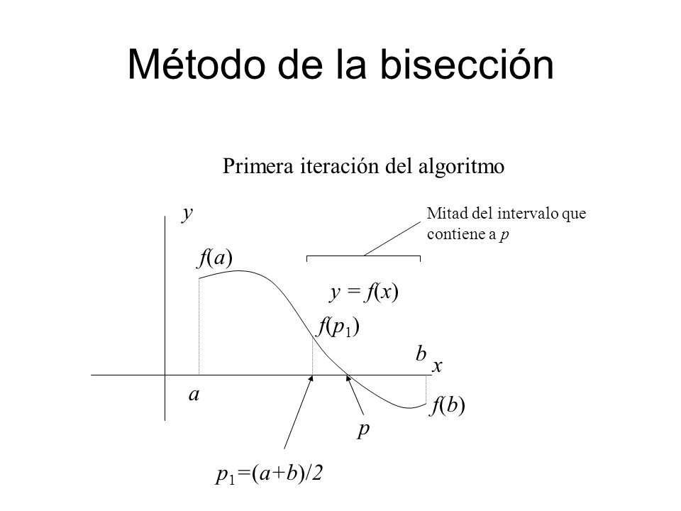

{% extends "app.html" %}
{% block title %}
Metodos numericos
{% endblock %}
{% block body %}

Método de la bisección
En matemáticas, el método de bisección es un algoritmo de búsqueda de raíces que trabaja dividiendo el intervalo a la mitad y seleccionando el subintervalo que tiene la raíz.
En cálculo numérico, el método de la regula falsi (regla del falso) o falsa posición es un método iterativo de resolución numérica de ecuaciones no lineales. El método combina el método de bisección y el método de la secante.
En análisis numérico, el método de Newton (conocido también como el método de Newton-Raphson o el método de Newton-Fourier) es un algoritmo para encontrar aproximaciones de los ceros o raíces de una función real.
El método de la secante: - Es un método abierto (método no acotado). - Se basa en trazar una recta entre (x0, f(x0)) y (x1, f(x1)) y en base a ello determinar un x2 que sería la intersección que tiene la recta con el eje de las abscisas.
El método del punto fijo es un método iterativo que permite resolver sistemas de ecuaciones no necesariamente lineales. En particular se puede utilizar para determinar raíces de una función de la forma f ( x ) {\displaystyle f(x)} , siempre y cuando se cumplan los criterios de convergencia.
En el campo matemático del análisis numérico, el método de Horner, llamado así por William George Horner, es un método para evaluar de forma eficiente funciones polinómicas de una forma monomial.
Método de Gauss-Seidel. En análisis numérico el método de Gauss-Seidel es un método iterativo utilizado para resolver sistemas de ecuaciones lineales. El método se llama así en honor a los matemáticos alemanes Carl Friedrich Gauss y Philipp Ludwig von Seidel y es similar al método de Jacobi.
En análisis numérico el método de Jacobi es un método iterativo, usado para resolver sistemas de ecuaciones lineales del tipo A x = b {\displaystyle A\mathbf {x} =\mathbf {b} } . El algoritmo toma su nombre del matemático alemán Carl Gustav Jakob Jacobi.
En análisis numérico, el polinomio de Lagrange, llamado así en honor a Joseph-Louis de Lagrange, es una forma de presentar el polinomio que interpola un conjunto de puntos dado. Lagrange publicó este resultado en 1795, pero lo descubrió Edward Waring en 1779 y fue redescubierto más tarde por Leonhard Euler en 1783.
La función f(x) (en azul) es aproximada por la función lineal (en rojo). En análisis numérico la regla del trapecio es un método de integración, es decir, un método para calcular aproximadamente el valor de una integral definida.
Así que se pueden usar diferencias finitas para aproximar derivadas. Esta técnica se emplea a menudo en análisis numérico, especialmente en ecuaciones diferenciales numéricas ordinarias, ecuaciones en diferencias y ecuación en derivadas parciales.
En integración numérica, una forma de aproximar una integral definida en un intervalo [a,b] es mediante la regla del trapecio, es decir, que sobre cada subintervalo en el que se divide [a,b] se aproxima f por un polinomio de primer grado, para luego calcular la integral como suma de las áreas de los trapecios formados